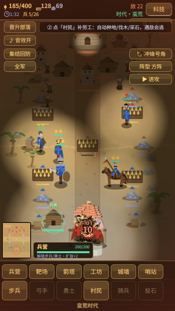
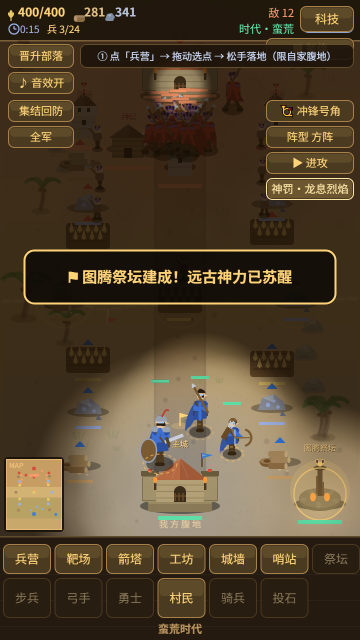

A browser build of the community RTS — homage to the Ancient Age of Rise of Nations.
游戏完全在浏览器中运行——无需安装、无需账号、无需钱包。此嵌入为竖屏手机布局；想要更大画面、键盘快捷键和侧栏说明，请打开桌面完整版。
⛶ 打开桌面完整版（键盘快捷键 + 侧栏说明）
Barbarian Age is a small real-time strategy game from the OMC community.
Click or tap to select.

